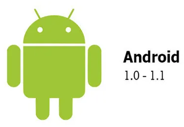
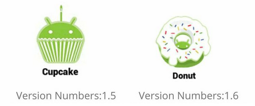
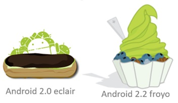
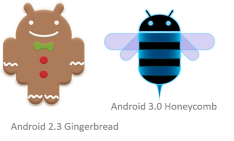
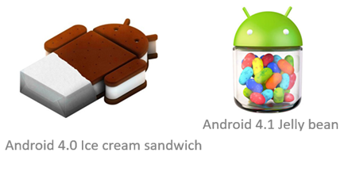
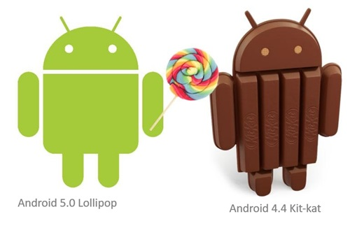
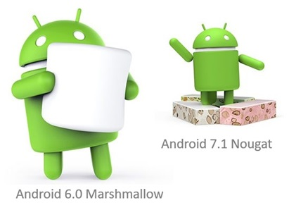
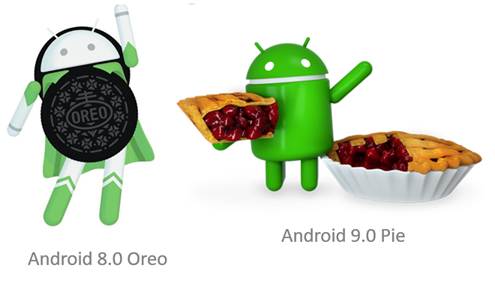
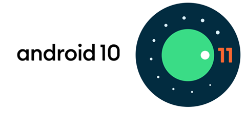
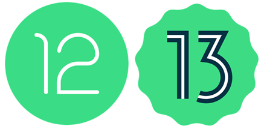

Sistema Operativo Android
Introducción
Android es un sistema operativo basado en Linux, diseñado inicialmente para teléfonos inteligentes y actualmente presente en una gran variedad de dispositivos: relojes, televisores, coches y hasta electrodomésticos. Su lanzamiento oficial en 2008 marcó un antes y un después en la industria móvil, gracias a su carácter abierto, la posibilidad de ser adoptado por múltiples fabricantes y el apoyo de Google con un ecosistema de aplicaciones en constante crecimiento.
A lo largo de los años, Android ha pasado por numerosas versiones que han ido incorporando mejoras en diseño, seguridad, rendimiento y experiencia de usuario. A continuación, se presenta un recorrido por sus principales versiones.
Los primeros pasos: Android 1.0 y 1.1 (2008–2009)
En 2008, el HTC Dream fue el primer dispositivo con Android 1.0. Ofrecía lo esencial: navegador, sincronización con servicios de Google, Android Market (precursor de Google Play) y soporte para apps de terceros.
Unos meses más tarde, Android 1.1 trajo pequeños ajustes, como adjuntar archivos en mensajes o mantener la pantalla encendida en llamadas. No era revolucionario, pero cimentó la base de lo que vendría.

El comienzo de los postres: Cupcake y Donut (2009)
Cupcake (1.5) fue la primera gran actualización. Introdujo el teclado virtual, widgets en pantalla, sincronización automática y la posibilidad de subir vídeos a YouTube. Era el inicio del Android que hoy reconocemos.
Con Donut (1.6), Android se volvió más versátil: mejoró la búsqueda por voz y texto, añadió un motor multilingüe de síntesis de voz y, lo más importante, soportó diferentes resoluciones de pantalla, lo que abrió la puerta a la gran diversidad de dispositivos Android.

Eclair y Froyo (2009–2010): el salto de calidad
Eclair (2.0–2.1) dio un gran paso hacia la modernidad: fondos animados, soporte multitouch, mejoras en la cámara y Google Maps con navegación integrada. Por primera vez, Android se sintió como un sistema competitivo frente a iOS.
Con Froyo (2.2) llegaron las notificaciones push, la posibilidad de instalar apps en la tarjeta SD y soporte para Adobe Flash, lo que en ese momento fue un gran reclamo frente a la limitación de iOS.

Gingerbread y Honeycomb (2010–2011): expansión y experimentación
Gingerbread (2.3) pulió la interfaz, hizo más rápido el teclado y añadió soporte para NFC, algo adelantado a su tiempo. También mejoró el rendimiento para juegos y multimedia. Fue muy popular en los primeros smartphones Android masivos.
En paralelo, Honeycomb (3.0) fue un experimento exclusivo para tabletas. Introdujo una interfaz renovada con barra de sistema inferior y multitarea mejorada. Aunque no tuvo mucho recorrido, sentó las bases para unificar móviles y tablets más adelante.

Ice Cream Sandwich y Jelly Bean (2011–2013): unificación y fluidez
Ice Cream Sandwich (4.0) unificó la experiencia de móviles y tablets, estrenó la tipografía Roboto, el desbloqueo facial y un navegador con pestañas al estilo de Chrome. Fue el inicio de un diseño más coherente.
Con Jelly Bean (4.1–4.3) llegó el proyecto Butter, que mejoró la fluidez de la interfaz. También introdujo Google Now, notificaciones expandibles y dictado por voz sin conexión. Android empezaba a sentirse más inteligente y ágil.

KitKat y Lollipop (2013–2015): el diseño como protagonista
KitKat (4.4) modernizó la estética con transparencias y modo inmersivo, además de optimizar el sistema para dispositivos de gama baja. Esto permitió llevar Android a millones de usuarios en mercados emergentes.
Lollipop (5.0–5.1) dio un giro visual con Material Design, lleno de colores y animaciones. También incorporó soporte para procesadores de 64 bits, una nueva gestión de notificaciones y mejoras en la batería. Fue un antes y un después en la identidad visual de Android.

Marshmallow y Nougat (2015–2016): seguridad y multitarea
Marshmallow (6.0) trajo una de las funciones más esperadas: el gestor de permisos por aplicación. También añadió soporte para huellas digitales y Android Pay. Además, introdujo el modo Doze, que mejoró notablemente el ahorro de batería.
Nougat (7.0–7.1) apostó por la productividad con la pantalla dividida y la optimización de recursos. También añadió soporte para Vulkan API y compatibilidad con Java 8. El sistema se volvió más maduro y flexible.

Oreo y Pie (2017–2018): inteligencia y bienestar digital
Oreo (8.0–8.1) trajo Picture in Picture (PiP), iconos adaptativos y un nuevo sistema de notificaciones. Con Project Treble, se facilitó la actualización de dispositivos, uno de los grandes problemas históricos de Android.
Pie (9.0) introdujo la navegación por gestos, la batería adaptativa y el sistema Digital Wellbeing, pensado para fomentar un uso más saludable del móvil. Android ya no solo buscaba potencia, también bienestar.

Android 10 y 11 (2019–2020): hacia una experiencia más integrada
Android 10 apostó por la privacidad, con permisos más detallados, y añadió el modo oscuro a todo el sistema. También fue pionero en compatibilidad con redes 5G y teléfonos plegables.
Android 11 pulió la experiencia con burbujas de chat, un centro de control para dispositivos inteligentes y permisos temporales para apps. Android empezaba a integrarse mejor con el hogar conectado.

Android 12 y 13 (2021–2022): personalización y seguridad
Android 12 renovó la estética con Material You, un sistema de colores dinámicos basados en el fondo de pantalla. También estrenó un panel de privacidad claro y actualizaciones más rápidas mediante Google Play.
Android 13 reforzó la seguridad, permitió elegir idiomas por aplicación y mejoró el portapapeles. Además, potenció la personalización de la interfaz y añadió mejoras en el audio y multimedia.

Android 14 (2023): más control y conectividad
Con Android 14, Google puso el foco en la personalización de la pantalla de bloqueo, nuevos permisos más estrictos, conectividad vía satélite y soporte para Ultra HDR. También limitó las apps de 32 bits, impulsando una transición hacia un ecosistema más moderno y seguro.
Android 15 (2024–2025): el presente
La última versión, Android 15, continúa la senda de ofrecer un sistema más eficiente, seguro y adaptado a nuevas formas de uso. Entre sus novedades destacan:
- Mejor integración con dispositivos plegables y pantallas de gran formato.
- Nuevas funciones potenciadas por inteligencia artificial para personalización y productividad.
- Refuerzo de la seguridad y la privacidad como ejes centrales.
- Optimizaciones en consumo energético y gestión de procesos.
Con Android 15, el sistema se prepara para una nueva etapa donde la IA y la conectividad avanzada serán protagonistas, manteniendo al mismo tiempo la esencia de ser una plataforma abierta y diversa.
Conclusión
Desde aquel humilde HTC Dream hasta los actuales smartphones con pantallas plegables y funciones de IA, Android ha recorrido un camino fascinante. Cada versión trajo consigo innovaciones que, más allá de competir con iOS, marcaron la evolución de toda la industria móvil.
Hoy, con más de 3.000 millones de dispositivos activos, Android no es solo un sistema operativo: es un ecosistema global en constante transformación.
📱 Resumen de versiones de Android
| Versión | Año | Nombre | Principales novedades |
|---|---|---|---|
| 1.0 | 2008 | – | Primera versión comercial (HTC Dream), Android Market, apps básicas de Google. |
| 1.1 | 2009 | – | Adjuntar archivos en mensajes, mejoras de estabilidad. |
| 1.5 | 2009 | Cupcake | Teclado virtual, widgets, subida de vídeos a YouTube. |
| 1.6 | 2009 | Donut | Búsqueda por voz/texto, soporte multiresolución. |
| 2.0–2.1 | 2009 | Eclair | Fondos animados, multitouch, Google Maps Navigation. |
| 2.2 | 2010 | Froyo | Notificaciones push, apps en tarjeta SD, soporte Flash. |
| 2.3 | 2010 | Gingerbread | Interfaz renovada, soporte NFC, mejoras en juegos y audio. |
| 3.x | 2011 | Honeycomb | Optimizado para tabletas, multitarea mejorada. |
| 4.0 | 2011 | Ice Cream Sandwich | Unificación móvil/tablet, tipografía Roboto, desbloqueo facial. |
| 4.1–4.3 | 2012 | Jelly Bean | Proyecto Butter (fluidez), Google Now, notificaciones expandibles. |
| 4.4 | 2013 | KitKat | Modo inmersivo, mejor soporte a gama baja. |
| 5.0–5.1 | 2014 | Lollipop | Material Design, procesadores 64 bits, nuevas notificaciones. |
| 6.0 | 2015 | Marshmallow | Permisos por app, huellas digitales, Android Pay. |
| 7.0–7.1 | 2016 | Nougat | Multiventana, API Vulkan, mejor gestión batería. |
| 8.0–8.1 | 2017 | Oreo | Picture in Picture, iconos adaptativos, Project Treble. |
| 9.0 | 2018 | Pie | Navegación por gestos, Digital Wellbeing, IA adaptativa. |
| 10.0 | 2019 | – | Modo oscuro, soporte 5G y plegables, Live Caption. |
| 11.0 | 2020 | – | Burbujas de chat, control de dispositivos, permisos temporales. |
| 12.0 | 2021 | – | Material You, panel de privacidad, capturas con desplazamiento. |
| 13.0 | 2022 | – | Idiomas por app, mejoras en portapapeles y seguridad. |
| 14.0 | 2023 | – | Conectividad satelital, Ultra HDR, adiós apps 32 bits. |
| 15.0 | 2024 | – | IA más integrada, mejoras en plegables, más seguridad. |